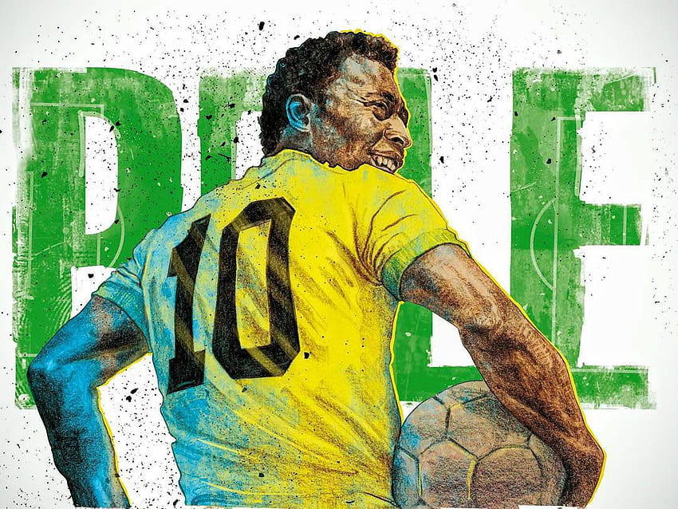

O maior da história do futebol

Edson Arantes do Nascimento[8] (Três Corações, 23 de outubro de 1940 – São Paulo, 29 de dezembro de 2022), mais conhecido como Pelé, foi um futebolista brasileiro que atuou como atacante. Descrito como o "Rei do Futebol", é amplamente considerado como o maior atleta de todos os tempos.[9][10] Em 2000, foi eleito Jogador do Século pela Federação Internacional de História e Estatísticas do Futebol (IFFHS) e foi um dos dois vencedores conjuntos do prêmio Melhor Jogador do Século da FIFA. Nesse mesmo ano, Pelé foi eleito Atleta do Século pelo Comitê Olímpico Internacional. De acordo com a IFFHS, é o segundo maior goleador da história do futebol em jogos oficiais, tendo marcado 765 gols em 812 partidas. No total foram 1283 gols em 1363 jogos (incluindo amistosos não-oficiais), um recorde mundial do Guinness. Durante sua carreira, chegou a ser durante um período o atleta mais bem pago do mundo.
Pelé começou a jogar pelo Santos Futebol Clube aos quinze anos de idade, e pela Seleção Brasileira aos dezesseis. Durante sua carreira na Amarelinha, sagrou-se campeão de três edições da Copa do Mundo FIFA: 1958, 1962 e 1970, sendo o único a fazê-lo como jogador. Contando os gols oficiais, Pelé é, ao lado de Neymar, o maior goleador da história da Seleção Brasileira, com 77 gols em 92 jogos. Em clubes, ele é o maior artilheiro da história do Santos e os levou a várias conquistas, com destaque para duas Copas Libertadores da América e dois Mundiais Interclubes, vencidos em 1962 e 1963. Conhecido por conectar a frase "jogo bonito" ao futebol, a "ação eletrizante e a propensão a objetivos espetaculares" de Pelé fizeram dele uma estrela rapidamente, e sua equipe fez turnês internacionais, a fim de aproveitar ao máximo sua popularidade. Após se aposentar em 1977, tornou-se embaixador mundial do futebol e fez muitos trabalhos de atuação e comerciais. Em janeiro de 1995, foi nomeado ministro do esporte no governo Fernando Henrique Cardoso. Em 2010, foi nomeado presidente honorário do New York Cosmos.
Com média de quase um gol por partida ao longo de sua carreira, Pelé era especialista em chutar a bola com qualquer um dos pés, além de antecipar os movimentos de seus oponentes em campo. Embora atuasse predominantemente como atacante, ele podia recuar e assumir um papel de playmaker, fornecendo assistências com sua visão e habilidade de passe. Considerado um jogador completo, também tinha como característica a qualidade no drible para passar pelos adversários. No Brasil, Pelé é aclamado como herói nacional por suas realizações no futebol e por seu apoio franco a políticas que melhoram as condições sociais dos pobres.[11][12] Ao longo de sua carreira e aposentadoria, recebeu vários prêmios individuais e de equipe por seu desempenho em campo, suas conquistas recordes e seu legado no esporte.
| Informações do REI | |
|---|---|
| Nome completo | Edson Arantes do Nascimento |
| Nacionalidade | brasileiro |
| Data de nascimento | 23 de outubro de 1940 |
| Data da morte | 29 de dezembro de 2022 (82 anos) |
| Local de nascimento | Três Corações, Minas Gerais, Brasil |
| Local da morte | São Paulo, São Paulo, Brasil |
| Profissão | |
| Jogou como atacante | |
| Clubes e Seleções | |
| Bauru - 1953 até 1955 | |
| Santos - 1956 até 1974 | |
| New York Cosmos - 1975 até 1977 |